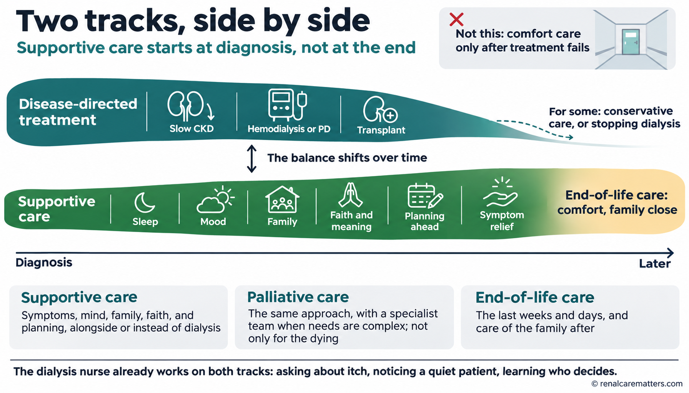
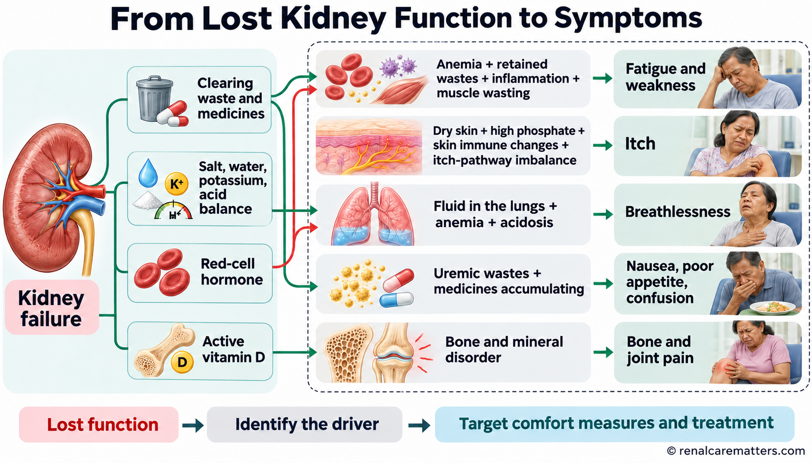
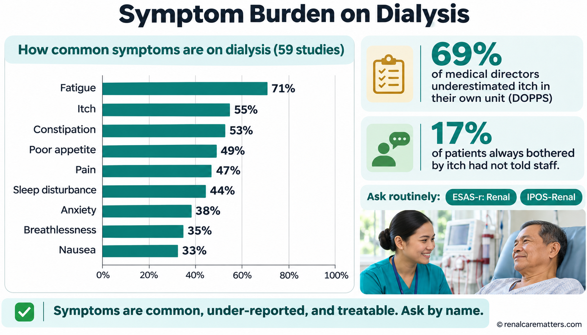
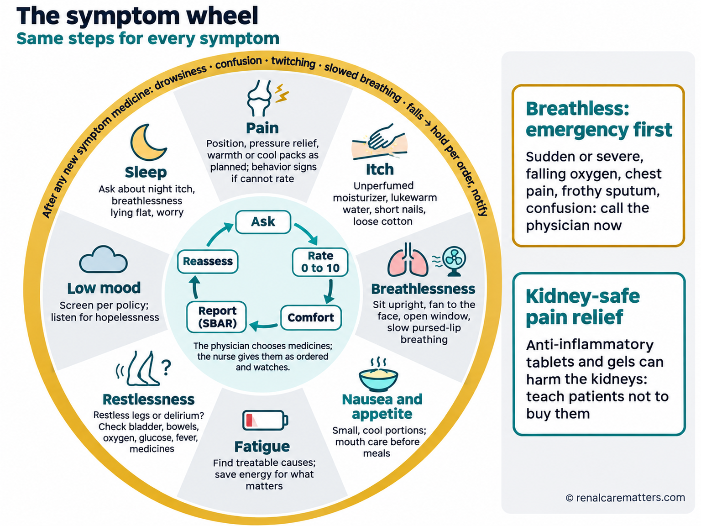
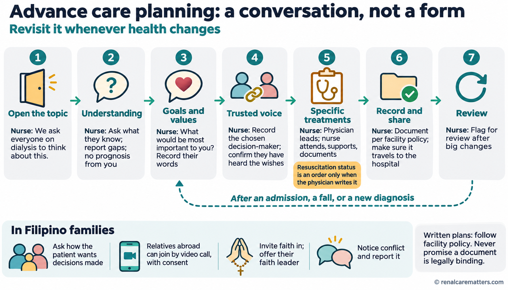
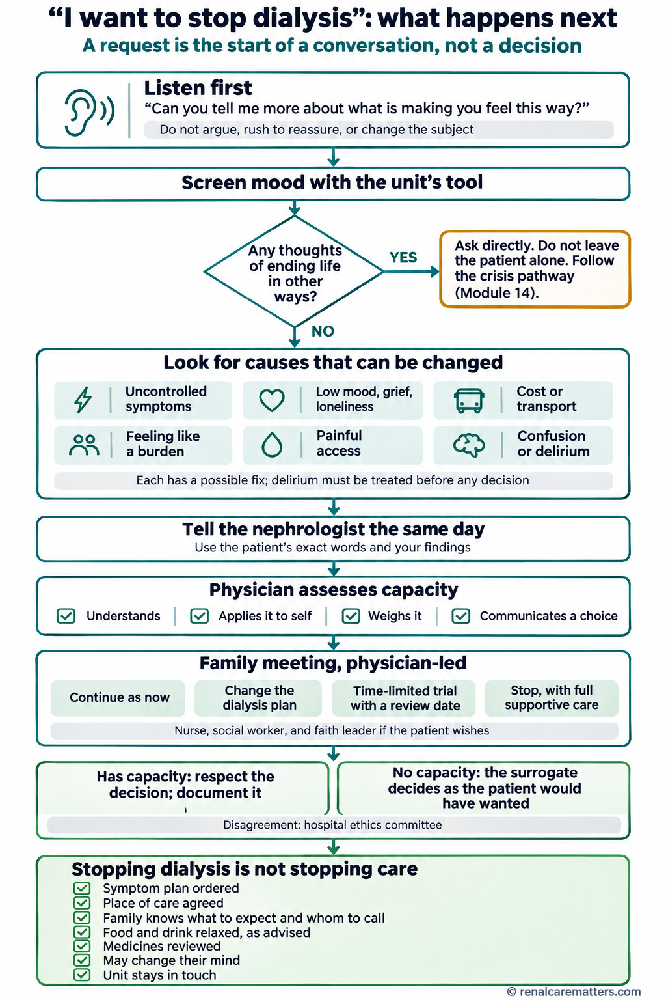
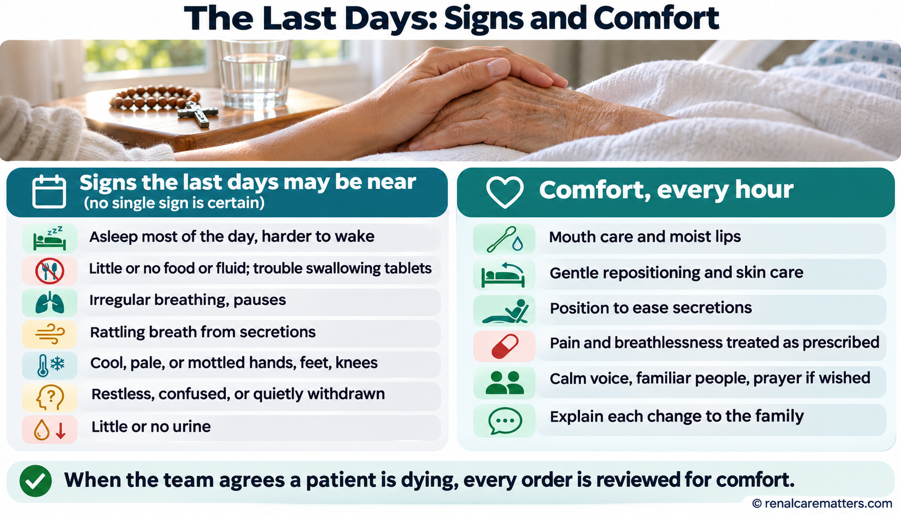
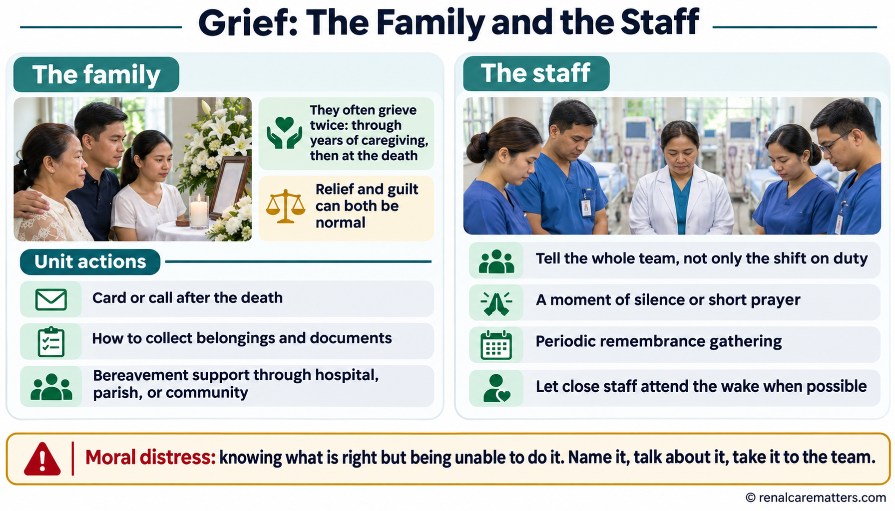

After this module you should be able to
- Explain why supportive care runs alongside every kidney treatment, and how it differs from care in the last days of life.
- Relate the common symptoms of kidney failure to their mechanisms, and describe what happens in the body when dialysis stops.
- Name validated symptom-assessment tools and summarize, in calibrated language, what studies show about conservative care and stopping dialysis.
- Carry out the nurse’s role in supportive care: ask routinely, assess, comfort, document, report, and refer.
- Assess pain, itch, breathlessness, nausea, fatigue, restlessness, and low mood, provide nursing comfort measures, and report for treatment with attention to medicine safety in kidney failure.
- Support advance care planning by eliciting goals, identifying the surrogate decision-maker, and documenting wishes per facility policy, within the Filipino family and faith context.
- Respond to a request to stop dialysis by screening for depression and reversible causes, involving the team, respecting a decision made with capacity, and continuing care after dialysis stops.
- Recognize the dying phase, provide comfort care to the patient and family in hospital or at home, and support bereaved families and grieving staff.
Two tracks that run side by side
Many nurses picture palliative care as a door at the end of a corridor. First the patient receives “active” treatment. Only when that fails does comfort care begin. In kidney care this picture is wrong, and it costs patients months of suffering that could have been eased.
A better picture is two railway tracks that run side by side for the whole journey. One track is disease-directed treatment: slowing chronic kidney disease (CKD), then hemodialysis (HD), peritoneal dialysis (PD), or a transplant. The other is supportive care: relieving symptoms; attending to mood, sleep, family strain, money, faith, and meaning; and planning ahead for the time when the person can no longer speak for themselves. The second track starts at diagnosis, not at the end.
The picture has a limit. Real tracks never touch, and these do all the time. The same session that removes fluid can relieve breathlessness. A change to the dialysis prescription can ease cramps and itch. The two tracks are not two teams. They are two questions the same team asks at every visit: what is the disease doing, and how is this person living with it?
Over time the balance shifts. Early on, most effort goes to disease-directed treatment, with supportive care in the background. For a frail patient with a heavy burden of illness, the balance may tilt toward comfort and function. For some, the disease-directed track ends. They choose conservative kidney management without dialysis (Module 5), or they decide to stop dialysis. Then supportive care becomes all of care, and in the last days it becomes end-of-life care.
Three terms are used loosely. Fix their meaning for this module:
- Supportive care (kidney supportive care): attention to symptoms; psychological, social, and spiritual needs; advance care planning; and family support, alongside or instead of dialysis. Module 14 introduced it for patients living well on HD.
- Palliative care: the same approach delivered by, or with, a specialist team when needs are complex. It is not limited to the dying.
- End-of-life care: care in the last weeks and days of life, including care of the family after death.
Most of your patients will live for years on dialysis, and most of their symptoms can be eased. A few will reach a point where dialysis no longer serves them. Your work is to ask about suffering early and routinely, so that relief comes in time, and so that no one reaches the end without having been asked what matters to them.
You already work on both tracks, often without naming the second. Asking about itch while you cannulate, noticing that a patient has stopped joking with the others, learning which daughter makes the decisions: all of this is supportive care. This module makes that work deliberate.
At every session, ask two questions: what is the disease doing, and how is this person living with it?

Why kidney failure causes so many symptoms, and what happens when dialysis stops
The kidneys do far more than make urine. They clear waste products and many medicines. They keep sodium, potassium, water, and acid in balance. They make the hormone that drives red-cell production, and they activate vitamin D. When they fail, each lost function produces its own symptoms. Dialysis, done for about 12 hours a week, replaces only part of what healthy kidneys do around the clock. That is why the symptom burden stays high even in well-dialyzed patients.
| Symptom | Main mechanisms | What you may notice |
|---|---|---|
| Fatigue and weakness | Anemia lowers oxygen delivery to muscle and brain. Retained uremic waste products and chronic inflammation may produce “sickness behavior.” Muscle wasting, poor sleep, low mood, and the fluid and blood-pressure shifts of each session add to it | Hemoglobin trend, recovery time after dialysis, sleep, mood, falls in blood pressure during sessions |
| Itch (uremic pruritus) | Several mechanisms act together: dry skin, high phosphate and calcium–phosphate imbalance, immune and inflammatory changes in the skin, and an imbalance in the body’s own opioid-signaling system that may make the itch pathway overactive. Histamine plays a smaller part than in allergic itch | Scratch marks, broken or thickened skin, disturbed sleep, phosphate results, missed or shortened sessions |
| Breathlessness | Fluid retained between sessions moves into the lungs. Anemia means each breath delivers less oxygen. Metabolic acidosis drives faster, deeper breathing. Heart disease is common. Anxiety amplifies the sensation | Weight gain since the last session, swelling, crackles, oxygen saturation, the position the patient prefers, panic |
| Pain | Bone and mineral disease; nerve damage from diabetes or uremia (burning, tingling feet); poor circulation and leg ulcers; joint and muscle pain; repeated cannulation; rarely, painful skin lesions from calcified small vessels | Site, character (aching, burning, shooting), timing, effect on sleep and walking, wounds |
| Nausea and poor appetite | Retained waste products stimulate the brain’s vomiting center. Slow stomach emptying in diabetes. Constipation from fluid limits, iron, phosphate binders, and inactivity. Medicines that accumulate | Pattern in relation to sessions and meals, bowel habit, weight and muscle loss, taste changes |
| Restlessness and confusion | Restless legs, often linked to iron deficiency. Delirium from uremia, infection, low oxygen, low glucose, or medicines the failed kidneys can no longer clear | Timing (evening leg discomfort versus fluctuating attention), new medicines, fever, glucose, bladder and bowels |
| Low mood and anxiety | Loss of role, income, and independence. Inflammation and uremia may act on the brain. Poor sleep. Uncertainty about the future (Module 14) | Withdrawal from others, irritability, hopelessness, screening scores |
The pharmacology trap. Many medicines, and the active breakdown products of some, are normally cleared by the kidneys. In kidney failure they build up over days. They can cause drowsiness, confusion, twitching, slowed breathing, or falls. So a symptom can be caused or worsened by the very medicine given to relieve another. That is why the physician chooses and doses every symptom medicine with kidney function in mind, and why you watch for new side effects after any change.
What happens in the body when dialysis stops. When regular dialysis ends, the functions it was replacing stop being replaced. How fast changes follow depends mostly on three things: how much kidney function and urine output the person still has, how much they eat and drink, and their other illnesses. The changes that may occur:
- Waste products accumulate. As uremic toxins rise, most people become steadily more tired and sleepy, eat and drink less, and spend more of the day asleep. Many drift into a deep sleep before death. Some develop restlessness, confusion, or muscle twitching, which can be treated.
- Potassium rises. High potassium can disturb the heart rhythm. In some patients death comes suddenly from this cause, often during sleep.
- Fluid accumulates. In someone who passes little urine, fluid taken in stays in the body. It can cause swelling and breathlessness. Small sips for comfort and mouth care help more than large drinks.
- Acid builds up. Acidosis can make breathing deeper and faster.
Studies give a sense of time, not a prediction for any one person. In a small prospective study in two United States dialysis units, patients lived a mean of 9.6 days after dialysis was stopped.1 In a larger study of 1,947 patients admitted to hospice after stopping dialysis, mean survival after hospice admission was 7.4 days, ranging from the same day to 40 days. Swelling of the limbs, lower functional status, referral from a hospital, and male sex were associated with shorter survival.2 Both studies were observational and from the United States. They describe what happened to those patients, not what will happen to the one in front of you.
What families can be told, honestly and calmly: the time is usually days to a few weeks; it differs from person to person; people who still pass urine may live longer; and the symptoms that do occur can be relieved.
Before you accept a symptom as “just the kidneys,” ask whether a medicine the kidneys can no longer clear is part of the cause.

What is known about symptom burden, conservative care, and stopping dialysis
The 2015 international conference on supportive care. In 2015 Kidney Disease: Improving Global Outcomes (KDIGO) published the executive summary of a Controversies Conference on Supportive Care in CKD. An international group of experts in nephrology, palliative care, research methods, economics, and education reached three conclusions. People with advanced CKD, including those on dialysis, carry a high burden of physical and psychological symptoms. Prognostic and assessment tools are limited. The quality of conservative and palliative care is often poor. The conference set out a roadmap for clinical work and research, and it applied supportive care to patients on dialysis as well as to those managed without it.3 This is a conference statement, not a graded recommendation. Module 5 used the same conference for its definition of comprehensive conservative care.
How common symptoms are. A systematic review of 59 studies in patients on dialysis found these weighted mean prevalences: fatigue 71%, itch 55%, constipation 53%, poor appetite 49%, pain 47%, sleep disturbance 44%, anxiety 38%, breathlessness 35%, nausea 33%, restless legs 30%, and depression 27%. Estimates varied widely between studies, because definitions and time frames differed.4 In 507 Canadian dialysis patients, the mean number of symptoms reported on a modified Edmonton symptom checklist was 7.5. Symptom distress was strongly associated with poorer physical and mental quality of life.5 A small pilot study found that patients with advanced kidney failure reported a symptom burden and quality of life similar to those of patients with terminal cancer.6 It was small, and it shows a comparison, not a cause.
Symptoms are missed. In the international Dialysis Outcomes and Practice Patterns Study, 69% of medical directors underestimated how common itch was in their own unit. Among patients who were nearly always or always bothered by itching, 17% had not told staff, and 18% were using no treatment.7 Patients often assume symptoms are an unavoidable part of dialysis. Unless someone asks, they stay silent.
Tools that make asking routine. Two short questionnaires designed for kidney patients are widely used.
- The Edmonton Symptom Assessment System–revised: Renal asks the patient to rate the severity of common symptoms, including itch, on a 0 to 10 scale. An earlier modified version was shown to be reliable and valid in dialysis patients.5 The renal version was used in a trial of routine symptom measurement and reporting in hemodialysis units in Alberta, Canada.8
- The renal version of the Integrated Palliative care Outcome Scale asks about kidney-related symptoms and also about worry, family anxiety, feeling at peace, information, and practical problems. It has a patient version and a staff version. In 81 patients and 53 nurses in Australia, both versions showed good test–retest reliability, internal consistency, and agreement with comparable measures.9
Neither tool diagnoses anything. Each turns a vague “How are you?” into specific answers that can be compared over time and acted on. Unit policy decides which tool, which language version, and how often.
Conservative care compared with dialysis. There are no randomized trials. In a retrospective study of patients over 75 years old with stage 5 CKD attending planned pre-dialysis clinics, those who chose dialysis lived longer on average than those managed conservatively. The survival advantage was lost in patients with high comorbidity, especially ischemic heart disease.10 Patients who choose dialysis may differ in many ways from those who do not, so this design cannot separate the effect of dialysis from the effect of who chose it. A systematic review found broadly similar 1-year survival in older patients treated with dialysis or supportive care. It warned that data on supportive care were scarce and open to bias, so the relative benefit could not be estimated with confidence.11
The honest message for patients: for frail older people with several serious illnesses, dialysis may add little time and much burden; for others it adds years. The decision rests on the person’s goals as much as on numbers.
Stopping dialysis. In a United States study from the early 1990s, about 10% of deaths among patients on long-term dialysis were preceded by a decision to stop.1 In a prospective study of 131 patients in United States and Canadian clinics who died after stopping dialysis, pain and agitation were the most common symptoms in the last day of life. Terminal care was generally judged satisfactory, and most deaths were considered good.12 A peaceful death after stopping dialysis is possible. It depends on planned symptom control.
What patients say they want. In a survey of 584 Canadian patients with stage 4 or 5 CKD, patients said they relied on the kidney team for symptom management, advance care planning, and psychological and spiritual support. Sixty-one percent regretted their decision to start dialysis. More wanted to die at home (36%) or in a hospice (29%) than in hospital (27%). Fewer than 10% had discussed end-of-life care with their nephrologist in the previous year.13 Findings from one Canadian program may not transfer directly to Filipino patients. The gap between what patients need and what they are offered is still a reason to ask.
What remains uncertain. Philippine data on symptom burden, conservative care, and stopping dialysis are scarce. This module uses figures from United States and other international studies, labeled by source, as working estimates. Which patients gain most from dialysis rather than conservative care, how best to predict prognosis, and which symptom treatments work best in kidney failure are all still being studied. Where evidence is incomplete, the physician’s judgment, the patient’s goals, and unit policy guide care.
Most of this evidence is observational. It tells you that suffering is common and often missed. It does not tell you which patient should choose which path. That answer comes from the patient.

The nurse’s role: ask, assess, comfort, document, report, refer
Supportive care is not a separate job for a separate team. In most Philippine dialysis units it is done by the people already at the chair, or it is not done at all. Your part has six steps.
- Ask routinely. Use the unit’s symptom questionnaire at the set interval. At every session ask one open question: “Anything new or bothering you since last time?” Ask specifically about itch, pain, sleep, breathlessness, appetite, and mood. Patients rarely volunteer them.
- Assess. For each symptom, record severity on a 0 to 10 scale, pattern, triggers, effect on sleep and daily life, and what the patient has already tried. Look for the mechanisms in the physiology table: weight gain, low blood pressure during sessions, a high phosphate, a new medicine.
- Comfort. Carry out the non-drug measures within nursing practice: positioning, skin care, a fan for breathlessness, mouth care, warmth, a quiet word, and time. The next section describes them symptom by symptom.
- Document. Record the patient’s own words, the scores, what you did, and the response. A symptom that is not written down is not handed over.
- Report. Tell the physician the severity, the trend, and the effect on the patient’s life, using SBAR (Situation, Background, Assessment, Recommendation). You do not prescribe, start, stop, or change symptom medicines. You give them as ordered, watch for benefit and side effects, hold and notify per order or protocol, and report again if relief is not achieved.
- Refer. With the physician’s agreement and the patient’s consent, involve the social worker for cost and transport, the dietitian for appetite and weight loss, a psychologist or psychiatrist for mood, a chaplain or the patient’s own faith leader for spiritual distress, and a palliative care team where one exists.
Signs that a fuller conversation is needed. Repeated hospital admissions. Steady loss of weight or function. More time spent in bed. A new serious illness such as cancer or a major amputation. Symptoms that are not controlled. A patient or relative who says, in any words, that dialysis no longer seems worth it. You do not lead the prognosis discussion. You can notice these signs, report them, and ask the physician whether it is time to talk about goals.
Stay within your role, and stay present. Questions such as “How long do I have?” or “Should I stop?” are answered by the physician with the patient and family. You can still respond: “That is an important question. Can you tell me what is making you think about it? I will make sure the doctor hears it, and I would like to be there when you talk.” Not changing the subject is itself care.
A symptom you did not ask about is a symptom nobody will treat. Ask, write it down, and pass it on.
Symptom by symptom: assess, comfort, report, refer
Module 14 taught you to ask about symptoms routinely in patients living well on HD. This section goes further, for patients whose symptoms are heavy or whose goals have shifted toward comfort. The pattern is the same for every symptom: assess it, relieve what nursing can relieve, report it with enough detail for the physician to act, and refer. Medicines appear here by class only, so you know what to watch for. The physician chooses the medicine, dose, and timing. You give it as ordered and watch the response.
A rule for every symptom medicine in kidney failure. The failed kidneys no longer clear many drugs and their breakdown products. Side effects can therefore appear days after a medicine is started or increased. After any new symptom medicine, watch for increasing drowsiness, new confusion, muscle twitching or jerks, slowed or shallow breathing, unsteadiness, and falls. If they appear, hold the next dose as the order or protocol allows, and notify the physician.14
Pain. Ask about pain at every contact and rate it from 0 to 10. A patient with confusion or dementia may not be able to rate it. Watch instead for grimacing, guarding, moaning, restlessness, and resistance to being turned, and use the behavioral pain tool your unit approves. Describe the character, because it points to the cause: aching bone pain, burning or tingling nerve pain, cramping, the sharp pain of a wound. Comfort measures include positioning and pressure relief, warmth or cool packs as the care plan allows, gentle movement, and pacing activity. Know the medicine cautions:
- Acetaminophen (paracetamol) is often the physician’s first choice for mild pain.
- Anti-inflammatory pain relievers (the nonsteroidal group, including many over-the-counter tablets and some widely used gels) can damage remaining kidney function, raise potassium, and increase bleeding from the stomach. Teach patients not to buy them on their own.
- Some opioid medicines, or their active breakdown products, accumulate in kidney failure. The physician chooses opioids and doses suited to kidney failure. Watch for drowsiness, confusion, twitching, and slow breathing. Expect constipation, which needs a bowel plan from the start.
- Medicines for nerve pain also accumulate and can cause drowsiness, dizziness, and falls.
Pain in kidney failure is both under-treated and treated with unsuitable medicines. Good pain control depends on careful choice, not on avoiding pain relievers altogether.14
Itch. Ask directly, because many patients never mention it.7 Rate it from 0 to 10, ask how often it wakes the patient, and inspect the skin for scratch marks, broken skin, and infection. Comfort measures: an unperfumed moisturizer at least daily and after bathing; lukewarm, not hot, water; short nails; loose cotton clothing; a cool room; and distraction during sessions. Report a high or rising score together with the phosphate results and any missed or shortened sessions. The physician may review dialysis adequacy and phosphate control, or prescribe medicines. Sedating antihistamines, which are commonly used, can cause drowsiness and falls in older patients. Some itch medicines accumulate in kidney failure.
Breathlessness. First decide whether it is an emergency. Sudden or severe breathlessness, falling oxygen saturation, chest pain, frothy sputum, or confusion needs the physician at once, because fluid in the lungs may need urgent removal. For chronic breathlessness, sit the patient upright and supported, with legs down if swollen. Direct a hand-held or electric fan toward the face, which many patients find relieving. Open a window. Teach slow, pursed-lip breathing. Stay calm and present, because fear makes breathlessness worse. Check weight gain and swelling, and report them for review of the target weight and fluid removal. Give oxygen only as ordered, usually when saturation is low. In palliative care the physician may prescribe low doses of medicines that ease the sensation of breathlessness. Watch for drowsiness and slowed breathing.
Nausea and poor appetite. Ask when nausea comes: before meals, during or after sessions, or in the morning. Check bowel habit, and review recent medicine changes. Offer small, frequent portions of foods the patient enjoys. Serve them cool if smells trigger nausea. Give mouth care before meals. Treat constipation as ordered. When the goal is comfort, ask the physician and dietitian whether diet restrictions can be relaxed. Forcing a dying person to follow a strict renal diet adds burden without benefit. Some anti-nausea medicines accumulate and can cause abnormal movements, restlessness, or drowsiness. Report these if they appear.
Fatigue. Ask how long the patient takes to recover after a session (Module 14) and what they can no longer do. Look for causes that can be treated: anemia, low blood pressure during sessions, poor sleep, low mood, infection, a sedating medicine. Help the patient spend energy on what matters most, such as a grandchild’s birthday or Sunday Mass, with rest before and after.
Restlessness. Two different problems hide under this word. Restless legs is an uncomfortable urge to move the legs, worse in the evening and at rest, relieved by moving. Report it, because iron deficiency and some medicines contribute and it can be treated. Agitation or delirium is a change in attention and awareness that comes and goes over hours, often with confusion, pulling at lines, or seeing things. Check for causes the team can reverse: pain, a full bladder, constipation, low oxygen, low or high glucose, fever, and medicines that have accumulated. Keep the patient safe and a family member close. Use a calm voice, and orient gently. Avoid restraints except as facility policy strictly allows. Report new delirium promptly. Sedating medicines are ordered by the physician and need close observation in kidney failure.
Low mood. Screen with the unit’s tool and follow the steps in Module 14. Fatigue, poor appetite, and poor sleep overlap between kidney failure and depression, so hopelessness, loss of interest, and guilt are often more telling. Some antidepressants need dose adjustment in kidney failure, and their benefit in dialysis patients is uncertain. Psychological support, social help, and spiritual care matter as much as medicine. A patient with low mood who says they want to stop dialysis needs both a mood assessment and a hearing. The stopping-dialysis section explains how.
Report and refer. Report each symptom with its score, trend, effect on daily life, likely contributors, and what you have tried. For example: “Breathlessness 7 of 10 lying flat, sleeps sitting in a chair, gained 3 kg since Monday, saturation 93% on room air; fan and positioning helped a little; requesting review of target weight and of her itch, which is 8 of 10.” Reassess after any change, and report again if relief is not achieved. Refer to the palliative care team, where one exists, when symptoms persist despite usual measures or when several problems pile up at once.
After any new symptom medicine, the next few days are when accumulation shows. Look for drowsiness, twitching, and slow breathing before you look for relief.

Advance care planning: goals, a trusted voice, and a written record
Module 5 introduced advance care planning as a routine part of kidney care and gave opening questions. This section describes the whole process and your part in it.
What it is. Advance care planning is a series of conversations, not a single form. Over months or years, the patient comes to understand the illness, thinks about what matters most, chooses who should speak for them if they cannot, and, if they wish, records preferences for future care. The plan is revisited when health changes: after a hospital admission, a new diagnosis, a fall, or a loss of independence.
Why it matters. Most patients on dialysis will at some point be too ill to decide for themselves, often suddenly. Without a plan, families must guess under pressure, and treatment defaults to whatever is technically possible.
The best trial evidence comes from the United States. In a randomized trial of 210 patient–surrogate pairs from 20 dialysis centers in one region, a structured two-session advance care planning intervention for patients and their chosen surrogates improved agreement between patient and surrogate on goals of care. It also improved the surrogate’s confidence in decision-making. It did not change the patients’ own decisional conflict. Among the 45 patients who died, surrogates in the intervention group reported less anxiety, depression, and post-traumatic distress afterward.15 That bereavement finding rests on a small subgroup, and the trial measured agreement and distress, not survival. The program was designed to be delivered by trained nurses.16 Patients in a Canadian survey said they relied on their kidney team for this planning, yet fewer than 10% had discussed end-of-life care with their nephrologist in the previous year.13
The steps, and who does them.
| Step | What happens | Your part |
|---|---|---|
| Open the topic | Planning is presented as something every patient is offered | “We ask everyone on dialysis to think about this, while they are well.” Notice moments when the patient raises it. |
| Understanding | What the patient knows, and wants to know, about the illness | Ask, listen, and report gaps to the physician. Do not give a prognosis yourself. |
| Goals and values | What matters most; what would be unacceptable; what the patient fears | “If your health got worse, what would be most important to you?” Record the patient’s own words. |
| Surrogate decision-maker | Who should speak for the patient if they cannot | Ask, record the name and contact details, and confirm that person knows and has heard the patient’s wishes. |
| Specific treatments | Cardiopulmonary resuscitation, intensive care, breathing machines, tube feeding, continuing or stopping dialysis | Led by the physician. You attend, support, and document. Resuscitation status becomes an order only when the physician writes it. |
| Record and share | The plan is written and placed where it will be found | Document per facility policy. Make sure the plan travels with the patient to the hospital and the emergency room. |
| Review | Plans change as health and wishes change | Flag the plan for review after admissions or major changes. |
The Filipino family and faith context. In many Filipino families, the family decides together rather than the patient alone. The person who decides may be an eldest child, a spouse, a sibling who pays the bills, or a relative who is a nurse or doctor, sometimes working abroad. Some families avoid talking about death for fear that speaking of it invites it, or protect an elder from bad news. Some patients defer completely to their children or to God’s will. None of this makes planning impossible. Practical approaches:
- Ask the patient, privately and early, how they want decisions made: “Some people want to hear everything and decide themselves. Others prefer their family to decide with the doctor. What would you prefer?” Respect the answer and record it.
- Ask whom the patient wants present. Arrange family meetings when key members can attend, including relatives abroad by video call when the patient agrees. An adult patient with capacity controls what is shared, under data privacy law.17
- Use the patient’s language, and gentle, indirect openings when direct ones feel too harsh: “Have you thought about what you would want if you became very sick?”
- Invite faith into the conversation instead of leaving it outside. For many patients, prayer, the sacraments, or the guidance of a priest, pastor, minister, or imam is part of how they decide. Ask, “Is your faith important to you in this?” and offer to contact their faith leader. Trust in God and acceptance of medical limits can sit together.
- Watch for conflict between family members, or between what the family wants and what the patient has said. Report it. The physician, social worker, or ethics committee can help resolve it.
The legal and policy setting in the Philippines. At the time of writing, we could not verify any Philippine law that specifically governs advance directives for end-of-life care or the appointment of a health care proxy. Bills on health care proxies and advance care planning have been filed in Congress but were not found to have been enacted. Until that changes, facility policy sets how a written directive or a named representative is recorded and honored, guided by the hospital’s ethics committee and legal counsel. Follow your facility’s forms and procedures. Never promise a patient or family that a document will be legally binding.
When the patient cannot decide. If a patient has lost capacity, the surrogate is asked to decide as the patient would have wanted, using what is known of their wishes and values. Where those are unknown, the surrogate decides in the patient’s best interests. Facility policy sets who may act as surrogate, and in what order relatives are approached when no one was named. A plan made earlier is the surrogate’s best guide, and a comfort afterward.
The most useful thing you can record is a name and a sentence: who will speak for this patient, and what the patient said matters most.

When a patient asks to stop dialysis
Sooner or later, a patient will tell you at the chair that they want to stop. Module 5 described stopping dialysis as a recognized choice made with the physician and family. Module 12 placed it in the ethics of refusal. This section is about what you do between the moment the words are spoken and the moment a decision is made, and after.
A request is the start of a conversation, not a decision. “I want to stop” can mean many things. “I am exhausted today.” “My itch is unbearable.” “I cannot afford the fare.” “I do not want to be a burden to my children.” “I am depressed.” Or “I have thought about this for months, and I am ready.” Each needs a different response. Begin by listening: “That sounds important. Can you tell me more about what is making you feel this way?” Do not argue, reassure too quickly, or change the subject.
Screen for depression and for risk of suicide. A request to stop dialysis is not the same as suicidal intent. Many patients who decide to stop are not depressed and have weighed the burdens of treatment clearly. But depression is common in dialysis patients, it can drive the request, and it can be treated. Screen mood with the unit’s tool. If anything the patient says suggests thoughts of ending their life in other ways, ask directly and follow the crisis section of Module 14, “Suicide risk and self-neglect: ask, stay, escalate.” A patient who describes current thoughts of ending their life is not left alone. Missing sessions, or drinking far beyond the fluid limit without discussion, may be self-neglect rather than a decision. Module 14 covers that too.
Look for causes that can be reversed.
| Possible driver | What may help |
|---|---|
| Uncontrolled symptoms: itch, pain, cramps, breathlessness, long recovery after sessions, low blood pressure during sessions | Symptom review and treatment; changes to the dialysis prescription by the nephrologist |
| Depression, anxiety, grief, or loneliness | Mood assessment, treatment, counseling, peer and faith support |
| Cost, transport, or lost income | Social worker; benefits and charitable assistance; shift changes |
| Feeling like a burden; family conflict | Family meeting; caregiver support (Module 14) |
| Access problems or painful cannulation | Access review; cannulation by an experienced nurse; local anesthetic per order |
| Confusion or delirium affecting judgment | Medical review for reversible causes before any decision is taken |
Inform the nephrologist and bring the team together. Report the request the same day, with the patient’s exact words and your findings. The physician assesses decision-making capacity: whether the patient understands the information, appreciates that it applies to them, can weigh it, and can communicate a choice. A family meeting follows, led by the physician, with you, the social worker, and, if the patient wishes, a chaplain or faith leader. The options are laid out honestly: continuing unchanged; changing the dialysis plan to reduce its burden; a time-limited trial with a review date (Module 5); stopping with full supportive care; and what each would likely mean.
Respect a decision made with capacity. An adult who has capacity may decide to stop dialysis even when the team or family disagrees. Your duty is to make sure the decision is informed, voluntary, and documented, and then to support it. If the patient lacks capacity, the surrogate decides as described in the advance care planning section. Where the family and the patient disagree, or the team is uncertain, the hospital ethics committee can help. Record the conversations, who was present, the decisions, the physician’s orders, and the patient’s own words.
Stopping dialysis does not mean stopping care. Before the last session, make sure that:
- A symptom plan is ordered for breathlessness, restlessness, itch, pain, nausea, and noisy breathing, with medicines suited to kidney failure available wherever the patient will be.
- The place of care is agreed: home, hospital, or hospice where one exists, with referral to palliative or home care services.
- The family knows what to expect, how to give comfort, and whom to call, day and night.
- Diet and fluid restrictions are relaxed as the physician advises, so the patient can enjoy small amounts of favorite food and drink.
- The physician has reviewed medicines that no longer help, for example phosphate binders or some long-term preventive drugs.
- The patient knows they may change their mind, and how to reach the unit if they do.
- The unit stays in touch: a call, a visit where policy allows, and a goodbye from the staff who have known the patient for years.
Stopping is an emotional moment for staff too. If you disagree with a decision, say so to the team, not to the patient, and ask for support if you need it. The grief section of this module covers moral distress.
When a patient says “I want to stop,” your first job is to find out what they mean. Listen, screen, look for what can be fixed, and tell the nephrologist the same day.

The last days of life: recognizing dying and caring for comfort
A patient may die after stopping dialysis, during conservative care, or from another illness while still on dialysis. In each case the last days follow a pattern you can learn to recognize. Recognizing it matters, because it changes the goal of every action: from correcting numbers to keeping the person comfortable and the family close.
Signs that a person may be entering the last days. No single sign is certain, and the team decides together. These often appear in combination:
- Spending most of the day asleep, and becoming harder to wake
- Taking little or no food or fluid, and difficulty swallowing tablets
- Changes in breathing: irregular breaths, pauses, or rapid shallow breathing
- Noisy, rattling breathing from secretions the person can no longer clear
- Cool, pale, or mottled hands, feet, and knees
- Confusion or restlessness, or a quiet withdrawal from surroundings
- Passing little or no urine
When the team agrees that the patient is dying, the physician reviews every order with the family. Which medicines to stop. Which comfort medicines to give, and by which route if swallowing fails. Whether blood tests and frequent vital signs are still useful. The resuscitation decision. You carry out the plan and make sure it is written where every shift will see it.
Comfort care, in hospital or at home.
| Need | Nursing care |
|---|---|
| Mouth | A dry mouth is common and uncomfortable. Moisten the mouth and lips often with a damp swab, a few drops of water, or ice chips if the patient can manage them. Apply lip balm, and clean gently. Teach the family to do this; it gives them a way to help. |
| Position and skin | Turn and reposition gently for comfort, support with pillows, and keep skin clean and dry. As death nears, comfort comes before a strict turning schedule. |
| Secretions | Position the patient on the side with the head slightly raised. Explain to the family that the rattling sound comes from saliva the patient can no longer swallow, and that it is not thought to distress the patient. Deep suctioning is usually avoided, because it can cause discomfort. Give medicines to reduce secretions only as ordered. |
| Breathlessness, pain, and restlessness | Give comfort medicines as ordered. Assess regularly for grimacing, moaning, or agitation. Check for a full bladder or constipation as causes of restlessness. Report symptoms that are not controlled. |
| Eating and drinking | Offer small amounts the patient wants. Never force food or fluid. Explain that loss of appetite is part of dying, not starvation. |
| Environment | Quiet, soft lighting, privacy where possible, and familiar things: a rosary, photographs, music, the voices of family. |
At home. Many Filipino patients wish to die at home among family. Make that possible where you can. Confirm the referral to a home care or palliative service where one exists. Make sure comfort medicines and written instructions go home with the family. Teach mouth care, positioning, and what the changes in breathing mean, and give a number to call. Tell the family what to do when death occurs at home, as the facility advises, including how a physician will confirm and certify the death.
Family presence. Let family stay as facility policy allows, and stretch the rules gently where safety permits. Encourage them to talk to and touch the patient; hearing may continue even when the person cannot respond. Prepare them for what they will see. Help relatives abroad say goodbye by phone or video call. Make sure family members also eat, rest, and take turns.
Spiritual care. Ask the patient or family which rites or prayers they want, and arrange them early, while the patient can still take part. For many Catholic families this includes the Anointing of the Sick and prayers at the bedside. Other Christian, Muslim, and indigenous families have their own practices; some, for example, wish the body to be prepared and buried quickly. Do not assume. Ask, “Are there prayers or customs that are important to your family at this time?” and make room for them.
After death. Follow facility policy for each step:
- Death is confirmed and the time recorded by the physician, or as policy defines. The physician completes the death certificate.
- Give the family time with the person before any care is done, and offer to call their faith leader.
- Care for the body with respect: close the eyes, straighten the limbs, clean and dress as the family wishes and culture allows, and invite the family to take part if they want to.
- Remove lines and devices as policy directs. A tunneled dialysis catheter or an implanted device may need a specific procedure, or may have to be left in place for the funeral parlor. Standard infection-control precautions continue after death.
- Label and release the body, and hand belongings to the family, as policy requires.
- Document the time of death, who confirmed it, who was present, notifications made, care given, and items released.
- Tell the dialysis unit and the other teams who knew the patient, so no reminder calls or appointments go to a grieving family.
Once the team agrees a patient is dying, every order should answer one question: does this make the person more comfortable, or the family closer?

Grief: the family afterward, and the staff who knew the patient for years
The family’s grief. Families of dialysis patients often grieve twice: first over years of decline, sacrifice, and caregiving, and then at the death. Grief may bring relief as well as sorrow, and relief can bring guilt. Both are normal and deserve to be named gently. Some families also carry debt from years of treatment. A bereaved relative may need more help if there is intense guilt that does not ease, inability to function months later, heavy drinking, or talk of not wanting to live. These warrant referral to a doctor or counselor.
What a unit can do, within its policy: send a card or make a call after the death; tell the family how to collect belongings and documents; give information about bereavement support through the hospital, parish, or community; and, where policy and the family welcome it, let staff attend the wake or a memorial Mass. Advance care planning done well before death may also help those left behind. In the randomized trial described earlier, surrogates of patients who died reported less anxiety and depression when they had taken part in planning.15
Staff grief. You may see a patient three times a week for ten years. You know the names of the grandchildren and the favorite jokes. When that patient dies, the loss is real, and it can repeat many times a year. Unrecognized, repeated grief can turn into exhaustion, detachment, or a sense that the work is pointless. Ways to acknowledge it:
- Tell the whole team, not only the shift on duty, when a patient dies.
- Pause for a moment of silence or a short prayer at the start of a shift, as the team prefers.
- Hold a periodic remembrance gathering for patients who have died.
- Let staff who were close to the patient attend the wake or funeral when the roster and policy allow.
Moral distress. Moral distress is the strain of believing you know the right thing to do but being unable to do it, or of taking part in care you believe is wrong. In kidney care it can arise when dialysis continues for a dying patient because the family cannot let go; when a patient stops dialysis and you disagree; when symptoms are left uncontrolled; or when cost decides treatment. Name it. Raise it with the head nurse or physician, bring it to a team meeting, and use the ethics committee when values conflict. Silence makes it worse.
Debriefing. After a difficult death, a sudden death in the unit, a death after stopping dialysis, or a suicide (Module 14), a short, structured debriefing helps the team learn and recover. Keep it blame-free and confidential: what happened, what went well, what was hard, what we would change, and who needs more support. Debriefing is not an incident review, although an incident report may also be needed.
Self-care is part of professional practice. Sleep, food, exercise, time with family, faith, and humor are not luxuries. Know your own signs of strain, such as dreading work, irritability, numbness, or poor sleep, and speak to someone you trust. Use the staff support or employee assistance your facility offers, and seek professional help if grief or distress persists. Nurses who look after themselves can stay present for patients over the long years that dialysis care demands.
Grief that is named and shared becomes bearable. Grief that is carried alone, shift after shift, becomes burnout. Tell the team when a patient dies.

Case: “Ayoko na” at the chair
Lola Remedios Santiago, 79, has been on HD three times a week for three years for diabetic kidney disease. She also has heart failure and had two hospital admissions in the last four months for fluid overload. Her daughter works abroad as a nurse. Her son Arnel brings her to every session and pays for her medicines.
It is the start of her Monday session. She has gained 3.1 kg since Friday and is sitting bolt upright. Her forearms are covered in scratch marks. You are the nurse at her chair, with the charge nurse, Ms. Weng Cabrera, two chairs away. While you tape her needles she says quietly, “Ayoko na, anak. I don’t want this anymore. I can’t sleep, I itch all night, and I can’t breathe lying down.” Her son, overhearing, says, “Don’t listen to her, Nurse. She is just tired.”
Before reading on, decide what you would assess, what you would communicate and to whom, what you would teach, and what would make you escalate. Then compare with the outline below.
Assess
Communicate
Teach
Escalate
Check your understanding
Each visit draws 5 questions at random from this module’s 15-question bank, in a shuffled order. Choose the single best answer for each, then select Check answers; a rationale appears under every option. Reload the page or select New set of questions for a different mix. Nothing you select is sent anywhere; scoring happens in your browser.
What this module builds
Each competency names an observable ability, the level this module aims for, and how that level is confirmed. Levels follow Miller’s pyramid. Self-study reaches knows; the higher levels are reached only when an educator or preceptor verifies them, and they are recorded on the competency checklist.
- Knows Explains the reasoning and applies it to cases. Verified by the self-assessment and the nursing case.
- Shows how Demonstrates the skill in simulation, a skills station, or teach-back. Verified by an educator.
- Does, supervised Performs the task with real patients under direct supervision. Verified by preceptor observation.
- Does, independent Performs the task without direct supervision after preceptor sign-off under the unit’s policy.
| Competency | Thread | Target level | Verified by |
|---|---|---|---|
| Explains supportive care as a track that runs alongside every kidney treatment, and distinguishes supportive, palliative, and end-of-life care. | Patient and family teaching, nutrition, and shared decisions | Knows | Self-assessment, Nursing case |
| Relates fatigue, itch, breathlessness, pain, nausea, restlessness, and low mood to their mechanisms in kidney failure, and describes calmly what happens in the body when dialysis stops. | Clinical assessment and fluid status | Knows | Self-assessment, Nursing case |
| Administers and scores the unit’s validated symptom questionnaire, assesses the highest-scoring symptoms in depth, and reports them with severity, trend, and effect on daily life. | Clinical assessment and fluid status | Does, supervised | Observed practice, Record review |
| Provides non-drug comfort measures for itch, breathlessness, nausea, pain, and restlessness as set out in the care plan, and evaluates their effect. | Delivering kidney replacement therapy | Does, supervised | Observed practice |
| Monitors patients receiving symptom medicines for accumulation in kidney failure (drowsiness, confusion, twitching, slowed breathing, falls), holds and notifies per order or protocol, and teaches patients to avoid self-medication with anti-inflammatory pain relievers. | Medicines and their safety | Does, supervised | Observed practice |
| Opens and supports an advance care planning conversation that elicits goals, identifies the surrogate decision-maker, and respects Filipino family and faith preferences, in a role-played scenario. | Professional, ethical, and legal practice | Shows how | Simulation, Teach-back |
| Documents goals of care, the named surrogate, and family-meeting decisions per facility policy, and ensures the plan travels with the patient on transfer. | Communication, handoff, and documentation | Does, supervised | Record review, Observed practice |
| Responds in role-play to a patient who asks to stop dialysis: listens, screens for depression and suicide risk following Module 14, identifies reversible causes, and reports to the nephrologist using SBAR. | Recognizing deterioration and emergency response | Shows how | Simulation |
| Explains decision-making capacity, the role of the surrogate and ethics committee, and the continuing-care plan needed before a patient stops dialysis. | Professional, ethical, and legal practice | Knows | Self-assessment, Nursing case |
| Recognizes signs that a patient may be entering the last days of life and provides comfort care, including mouth care, positioning, and management of secretions, under supervision. | Clinical assessment and fluid status | Does, supervised | Observed practice |
| Prepares a family, in a role-played conversation, for what to expect in the last days, at home or in hospital, including comfort measures they can give and whom to call. | Patient and family teaching, nutrition, and shared decisions | Shows how | Simulation, Teach-back |
| Takes part in a post-death debriefing, recognizes signs of moral distress and grief in self and colleagues, and names the facility’s staff-support resources. | Quality, safety culture, and improvement | Knows | Self-assessment, Nursing case |
With your preceptor
With a preceptor experienced in kidney supportive or palliative care, practice the assessment and communication skills of this module with patients who agree to take part. These are prompts for supervised learning, not a procedure. Your preceptor observes and signs off each item on the unit’s own competency form; the educator page has a printable version.
- Administers the unit’s symptom questionnaire to a patient, scores it, and reports the highest scores to the physician using SBAR.
- Assesses one symptom in depth (severity, pattern, triggers, effect on daily life) and carries out the non-drug comfort measures in the care plan.
- Checks a patient’s symptom medicines for drowsiness, confusion, twitching, or slowed breathing, and reports concerns.
- Observes a family meeting or goals-of-care discussion led by the physician, and documents the decisions and the named surrogate decision-maker per facility policy.
- Explains to a family, in calm and plain words, what supportive care offers alongside dialysis.
- Takes part in a debriefing after a patient’s death in the unit.
Read next on this site
- Advance Care Planning for Dialysis PatientsAdvance care planning for people on dialysis: starting the conversation and recording wishes.
- Symptom Checker — When to WorryA patient-facing symptom checker that can open a symptom conversation.
- Hurt Without Harm: A Guide to Safe Pain Relief in Kidney DiseaseItch in kidney disease: mechanisms, skin care, and treatment options.
- Safe Pain Relief in Kidney DiseasePain in kidney disease and why medicine choice matters.
- You Didn't Sign Up for This: The CKD Family Caregiver's GuidePractical and emotional support for family caregivers.
- CKD, Mental Health & SleepMood, anxiety, and sleep in kidney disease.
- Hurt Without Harm: A Guide to Safe Pain Relief in Kidney DiseaseDialysis in older adults, frailty, and treatment decisions.
- Post-Dialysis Fatigue: Why You're Exhausted After Dialysis (And What to Do About It)Fatigue after dialysis sessions and what can help.
- KDIGO Controversies Conference on Supportive Care in CKD: executive summary (Kidney International, 2015)Primary source (external site).